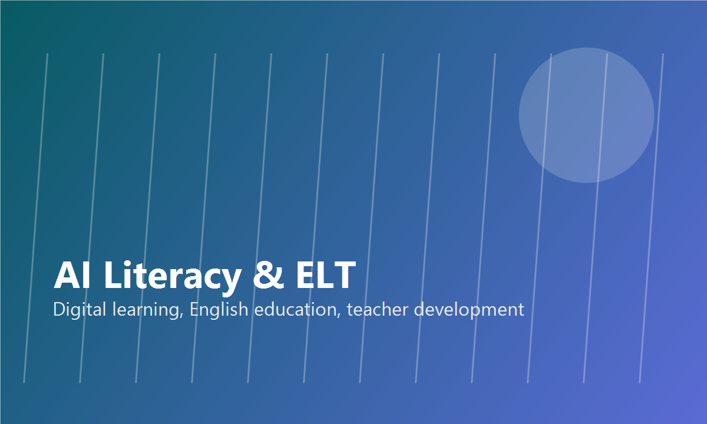
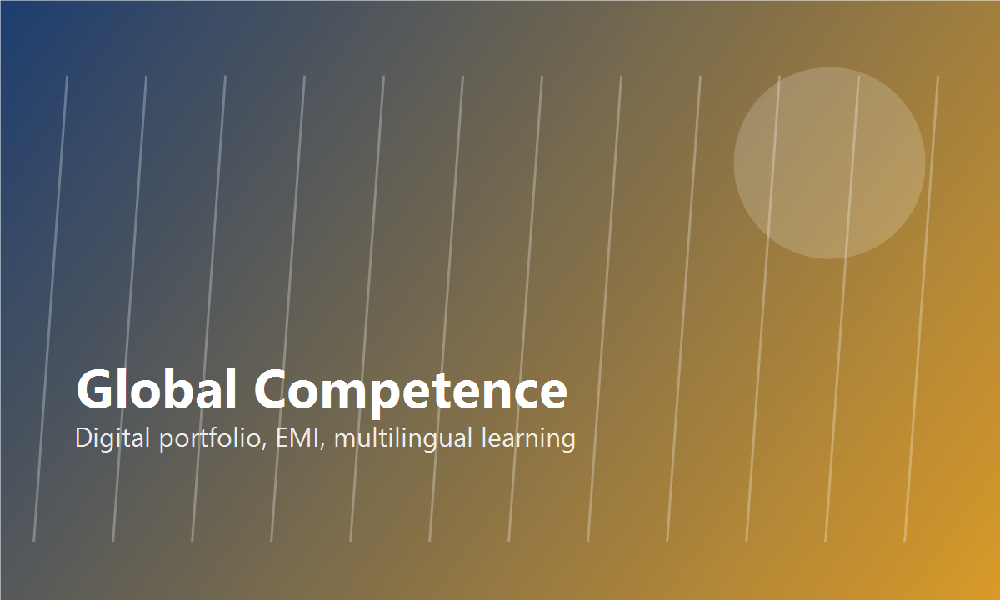
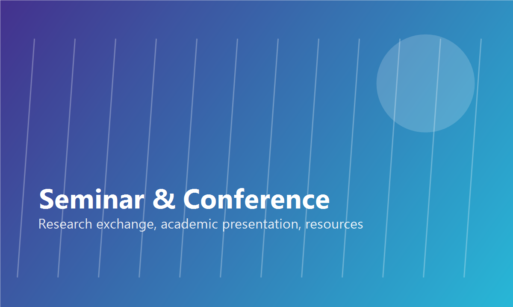

AI Literacy · English Education · Global Competence
교육, 언어, AI가 만나는 연구실
연구실의 핵심 비전은 AI 리터러시, 영어교육, EMI·다중언어 교육, 글로벌 역량, 디지털 포트폴리오를 연결해 미래형 고등교육과 학습자 성장을 연구하는 것입니다.

Highlights
최근 연구 성과 및 소식
People
구성원
Principal Investigator
이용직 교수 / Yong-Jik Lee
국립창원대학교 사림아너스학부. AI 리터러시, 영어교육, EMI, 글로벌 역량, 융합교육을 중심으로 연구합니다.

Postdoctoral Researchers
박사후연구원
AI 기반 교육, 언어교육, 학습분석, 글로벌 역량 연구의 협력 연구자를 위한 영역입니다.

Graduate Students
대학원생
영어교육, AI 리터러시, 학술 글쓰기, 디지털 포트폴리오 연구에 참여하는 학생 연구자 영역입니다.
Research
연구 분야와 진행 중인 프로젝트
AI Literacy & English Language Teaching
생성형 AI 활용 영어학습, AI 리터러시, 예비교사 및 대학생의 AI 수용과 학습경험을 연구합니다.
Global Competence & Digital Portfolio
자율전공 학생의 글로벌 역량 진단, 학습경로 설계, AI 기반 디지털 포트폴리오 시스템을 연구합니다.

Academic Writing, EMI & Multilingual Education
영어논문작성, 영어매개수업, 다중언어 교육, 국제학술 연구성과 확산을 다룹니다.
Publications
논문/출판물
2026
- Integrating Generative AI into English Learning
- Cognitive Load and Working Memory in Multimedia Video Podcasts
- Examining Artificial Intelligence Literacy Among First-Year Students
2025
- AI Literacy and English Pre-service Teachers
- Prior Coding and AI Learning in Non-Computing Majors
- GenAI for English Learning Motivation and Satisfaction
핵심 분야
- AI/디지털교육
- 영어교육 및 교사교육
- EMI, 다중언어, 글로벌 역량
Gallery / Resources
갤러리/자료실
Google Drive 자료 연동
원본 증빙자료는 Google Drive 권한 체계 안에서 관리됩니다. 권한이 있는 사용자는 Drive 폴더에서 자료를 확인할 수 있습니다.
전체 Drive 폴더 열기